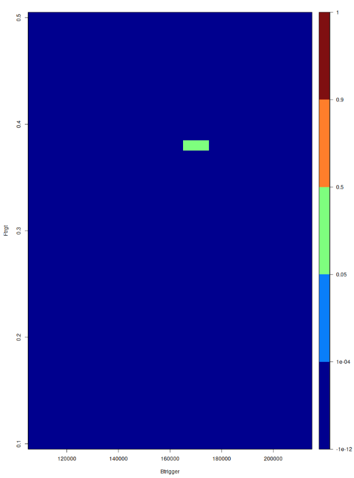
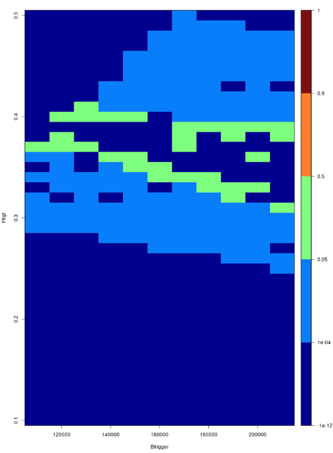
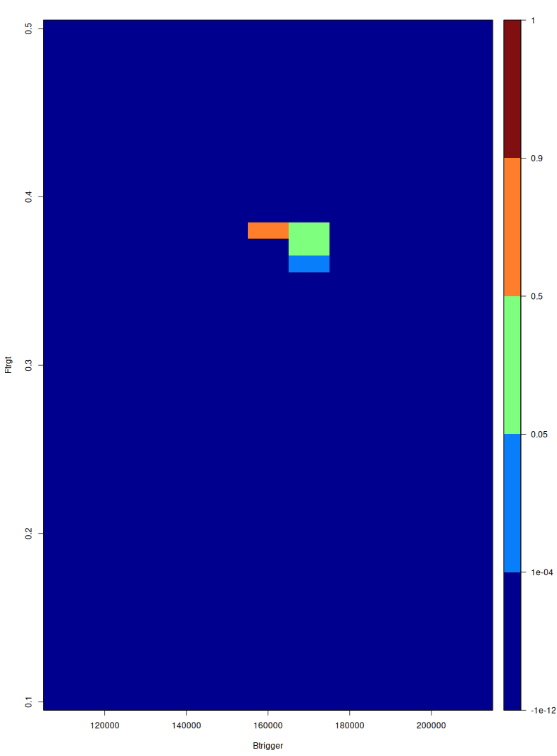
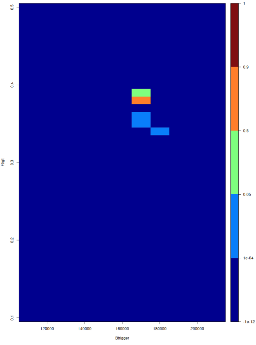
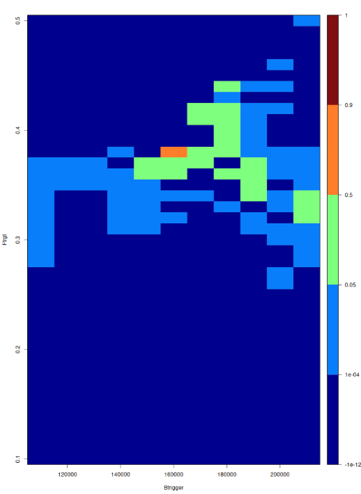
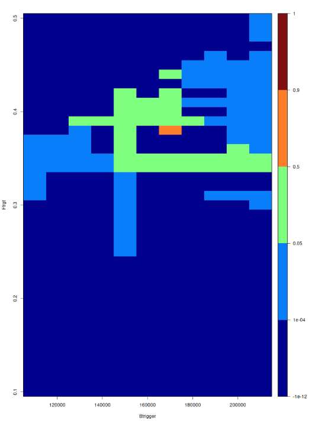

Explanation of Mathematical Methods Behind the First Half of the Project
Contents
Abstract
Sustainable fisheries management requires a delicate balance of maximising long-term catch whilst keeping the risk of stock depletion below precautionary thresholds. Traditionally, Management Strategy Evaluation (MSE) grid searches are used to find optimal Harvest Control Rules (HCRs). However, simulating these complex, interconnected dynamics is computationally expensive and time-consuming, particularly as management shifts from single-stock assessments to more realistic, multispecies mixed fisheries.
This project introduces a computationally efficient framework for evaluating HCRs. Initially applied to a single-stock fishery, the framework utilises Gaussian process regression to independently model both catch and risk. Then, by combining the methods of Bayesian history matching, acquisition functions and k-means clustering, we are able to systematically map the sample space. This drastically reduces the need for expensive simulation runs.
Building on this foundation, we scale up this framework to complex mixed-fisheries scenarios. Here, the objective becomes identifying the fishing mortality for each of the interacting stocks that safely maximizes total long-term catch. By modelling long-term catch, the framework inherently minimizes the risk of stock crashes and this is reinforced by a risk calculation that follows the ICES precautionary standard.
This framework provides a powerful tool for marine policy by significantly reducing the computational burden of mixed-fishery MSEs. This method delivers timely, evidence-based MSEs that ensures that the stocks remain both economically viable and firmly within safe biological limits.
Introduction
NO CURRENT APPROPRIATE ONE IN SOURCE MATERIAL
Creating the framework in a single stock fisheries context
LIST BELOW LIKELY TO BE MADE OBVIOUS BY CONTENTS TABLE
What mathematical methods will I explain in this section?
Gaussian processes
Bayesian History Matching
Kriging
Expected Improvement
Augmented Expected Improvement
Knowledge Gradient
K-Means Clustering
Context
We are building on the paper ``Using history matching to speed up management strategy evaluation grid searches’’. This paper is looking to find the Harvest Control Rule parametrised by \(F_{target}\) and \(B_{trigger}\) that maximises the median long-term catch whilst keeping the risk below 0.05 for a single-stock fishery. The paper does not consider fleet dynamics. We have an objective function in the paper which combines the risk and the catch and so this is the function we want to maximise to get our maximal median catch with the constraint of keeping the risk below 0.05.
To do this, the paper takes a Bayesian History Matching (BHM) approach. Firstly, we sample our first eight points which are spaced evenly throughout the sample space to get some initial data. Then, for each round we do the following:
We set up or update the Gaussian Process (GP) to model the risk and the GP to model the median catch
We can then use the risk as a threshold so that we only consider the values of \(F_{target}\) and \(B_{trigger}\) that have risk below 0.05
We use the GP which is modelling the median catch to get the value for the median catch at every point in the sample space, which will have some uncertainty
We use BHM to remove any points that are implausible (that have a low probability of being higher than the current best median catch)
We select 8 plausible points to sample in the next round
Now, we will look at the mathematics behind the methods above and also at the acquisition functions of Expected Improvement, Augmented Expected Improvement and Knowledge Gradient which I added to the original code.
General theory
Gaussian Processes
A Gaussian Process \(F\) has a mean function \(\mu_0\) and a covariance function \(\operatorname{cov}_0(x_i,x_j)\). We can then evaluate the covariance function \(\operatorname{cov}_0(x_i,x_j)\) for every pair \(x_i,x_j\) where \(i,j\in\{1, ..., n\}\) to find the covariance matrix \(\Sigma_{1:n}\) . Then, \(F\) is a probability distribution over our objective function \(f\) with the property that, for any given collection of points \({x_1,...x_n}\), the marginal probability distribution on \(F(x_{1:n}) = (F(x_1),...,F(x_n))\) is given by (Frazier 2018):
\[ F(x_{1:n}) \sim N(\mu_0(x_{1:n}),\Sigma_{1:n}) \]
where
\[ \mu_0(x_{1:n}) = (\mu_0(x_1), . . ., \mu_0(x_n)) \]
We choose a covariance function such that the inputs that have nearby points that have been evaluated have a more certain output than points that are further away from the points that have been evaluated (Spence 2025). This is equivalent to saying that if for some \(x,x',x''\) in the design space we have \(\|x - x'\| < \|x -x''\|\) for some norm \(\| \cdot \|\), then \(\operatorname{cov}_0(x, x') > \operatorname{cov}_0(x, x'')\) (Frazier 2018).
We use a GP to emulate the objective function because it is much cheaper to evaluate than our objective function. We can calculate \(F(x)\) for any \(x\) in the design space as our estimate of \(f(x)\) based on our current beliefs. This is true even for the evaluated points \(x_1,...,x_m\) as the emulator is fitted to these points (Spence 2025).
Maximum Likelihood Estimation
When using GPs to emulate our objective function, we need to be able to estimate the hyperparameters of the GP using the data we gain from evaluating our points \(x_1,...,x_n\) (Frazier 2018).
We can do this as follows. Firstly, we let the vector \(\eta\) represent the hyperparameters that give us \(\mu_0\) and \(\operatorname{cov}_0\). Then, given the observations \(f(x_{1:n}) = (f(x_1),...,f(x_n))\), we calculate the likelihood of these observations under the prior given \(\eta\) which is denoted as \(p(f(x_{1:n})|\eta)\) and modelled by ?@eq-MultivariateNormalDist . Lastly, we set \(\hat{\eta}\) to the value that maximizes this likelihood (Frazier 2018):
\[ \hat{\eta} = argmax_\eta p(f(x_{1:n})|\eta) \]
Kriging
Kriging is a Bayesian statistical method for modelling functions (Frazier 2018). Again, let \(f\) be the objective function and we focus on the design space \(X := \{x_1,...,x_k\}\). Now, if we have evaluated \(n\) points such that we have \(f(x_{1:n})\) and want to evaluate \(x_{n+1}\) we let \(k = n+1\) in ?@eq-MultivariateNormalDist . Then, we can compute the conditional distribution of \(F(x_{n+1})\) given \(f(x_{1:n})\) using Bayes’ rule:
\[ F(x_{n+1})|f(x_{1:n}) \sim N(\mu_n(x_{n+1}), \sigma^2_n(x_{n+1})) \]
where:
\[ \mu_n(x_{n+1}) = \operatorname{cov}_0(x_{n+1}, x_{1:n})(\Sigma_{1:n})^{-1}(f(x_{1:n}) - \mu_0(x_{1:n})) + \mu_0(x_{n+1}) \]
\[ \sigma^2_n(x_{n+1}) = \operatorname{cov}_0(x_{n+1},x_{n+1}) - \operatorname{cov}_0(x_{n+1}, x_{1:n})(\Sigma_{1:n})^{-1}\operatorname{cov}_0(x_{1:n},x_{n+1}) \]
where:
\[ \operatorname{cov}_0(x_{n+1}, x_{1:n}) = (\operatorname{cov}_0(x_{n+1}, x_1), ... , \operatorname{cov}_0(x_{n+1}, x_n)) \]
This conditional distribution \(F(x_{n+1})|f(x_{1:n})\) is called the posterior probability distribution for \(x_{n+1}\). We can calculate this distribution for every point in the design space \(X\). This results in a new GP \(F_n\) with a mean vector and covariance kernel that depend on the location of the unevaluated points, the locations of the evaluated points \(x_{1:n}\), and their values \(f(x_{1:n})\) (Frazier 2018). So, we can update our GP every round based on the new points we have evaluated.
Bayesian History Matching
Let \(x\) be a point in the sample space. We begin with some uncertainty about our objective function \(f(x)\) (Spence 2025). However, we can make probabilistic statements such as:
\[\begin{equation} P(f(x)>a)= \int_{a}^{\infty}P(f(x))df(x) \end{equation}\]
Once we evaluate another point \(x'\) where \(x' \neq x\), we are able to use Bayes’ Theorem improve our integral to:
\[\begin{equation} P(f(x)>a|f(x'))= \int_{a}^{\infty}P(f(x)|f(x'))df(x) \end{equation}\]
We now let \(a=max\{f(x_1),...,f(x_n)\}\) where \(n\) is the number of points we have evaluated so far. For the first round, \(n=8\) but as the rounds increase we make sure to include all previous points of the objective function that have been evaluated (Spence 2025). We remove the point \(x\) if:
\[ P(f(x)>a|f(x_{1:n})) = \int_{a}^{\infty}P(f(x)|f(x_{1:n}))df(x) <\varepsilon \]
for a small \(\varepsilon > 0\) until no plausible points remain. Then, the optimum will be \(x^*\) such that:
\[ f(x^*) = max\{f(x_{1:n})\} \]
as our index \(n\) counts the number of points we have evaluated throughout the whole simulation.
Expected Improvement
The first type of acquisition function we will look at is Expected Improvement (EI). Suppose we have sampled the points \(x_1, ... ,x_n\) and observe the values \(f(x_{1:n})\). Then, if we were to return a solution at this point, bearing in mind we observe the objective function \(f\) without noise and we can only return points we have already evaluated, we would return \(f^*_n = max\{f(x_1),...,f(x_n)\}\) (Frazier 2018). Imagine we then consider evaluating another point \(x_{n+1}\) to get \(f(x_{n+1})\). We can then define the Expected Improvement as:
\[\begin{equation} EI_n(x_{n+1}) := E[F(x_{n+1})|f(x_{1:n})-f^*_n]^+ \end{equation}\]
where \([F(x_{n+1})-f^*_n]^+\) is the positive part of \([F(x_{n+1})-f^*_n]\). This acquisition function is relatively easy to optimise and many different methods have been developed for doing this (Frazier 2018).
There is another expression for \(EI_n(x_{n+1})\):
\[ EI_n(x_{n+1}) = [(\mu_n(x_{n+1})-f_n^*\cdot\Phi(Z))+(\sigma_n(x_{n+1})\cdot\phi(Z))]^+ \]
where again the notation \([\cdot]^+\) means the positive part and where:
\[ Z = \frac{\mu_n(x_{n+1})-f_n^*}{\sigma_n(x_{n+1})} \]
?@eq-EIincode can be gained from ?@eq-MultivariateNormalDist by setting \(k = n+1\) and then studying the distribution of \(F(x_{n+1})-f^*_n\). However, we can also consider it as a version of Equation (15) from Jones, Schonlau, and Welch (1998) where we first flip the signs as we are focused on the maximisation case and then set \(f_{min} = f^*_n\), \(\hat{y} = \mu_n(x)\) and \(s = \sigma_n(x)\).
Augmented Expected Improvement
This was included to help make the method perform better for noisy functions which will make it more generally applicable (Huang et al. 2006). To deal with these noisy observations, a change was proposed to the standard EI function as detailed below. This change seems mostly to have been justified by empirical performance (Letham et al. 2018).
By adjusting Equation (12) found in Huang et al. (2006) to our own notation, we get that:
\[\begin{equation} AEI_n(x_{n+1})=E[F(x_{n+1})|f(x_{1:n})-f^*_{eb}]^+\left(1- \frac{\sigma_{obs}}{\sqrt{\sigma_n^2(x_{n+1})+\sigma_{obs}^2}}\right) \end{equation}\]
where \(\sigma_{obs}\) is the standard deviation of the noise variable set by the user and \(\sigma_n(x)\) is the standard deviation of GP \(F\) at the \(n^{th}\) iteration, as used beforehand. We have also changed \(f^*_n\) to \(f^*_{eb}\) which is the highest predicted mean at any sampled point so far so that we take into account that the uncertainty in our observations could cause a large spike (Huang et al. 2006).
Knowledge Gradient
We remove the assumption of EI that we have to return a pre-evaluated point as our best point (Frazier 2018). This allows us to do some different computations to the ones in EI. We also now start by saying that the solution we would choose if we have to stop sampling after \(n\) points would be the point in the design space with the largest \(\mu_n(\cdot)\) value, where \(\mu_n(\cdot)\) is the mean vector of the posterior probability distribution after \(n\) iterations. We call this maximum \({x_n^*}\) and then can say that \(F(x_n^*)\) is random under the posterior distribution and has the mean vector after sampling \(f(x_{1:n})\) of:
\[ \mu_n^* := \mu_n(x_n^*) = max_{x}\mu_n(x) \]
where \(x\) is any point in the sample space (Frazier 2018).
Then, we imagine that we are now allowed to sample a new point \(x_{n+1}\). We get a new posterior distribution at the point \(x\) which we can calculate using ?@eq-posteriordistributiongivensamples by replacing \(x_{n+1}\) with \(x\) and \(x_{1:n}\) with \(x_{1:n+1}\) to include our new observation. This will have the posterior mean function \(\mu_{n+1}(\cdot)\) defined as:
\[ \mu_{n+1}(x) = \mu_n(x) + \frac{\operatorname{cov}_n(x_{n+1},x)}{\operatorname{var}_n(x_{n+1}) + \sigma_{\mathrm{obs}}^2}(F(x_{n+1})|f(x_{1:n})-\mu_n(x_{n+1})) \]
where \(\sigma_{obs}\) is a noise variable which can be determined by the user (Ungredda, Pearce, and Branke 2022). The conditional expected value for \(F(x_n^*)\) changes to be:
\[ \mu_{n+1}^* := max_x\mu_{n+1}(x) \]
So, we can see that the increase in the conditional expected value of \(F(x_n^*)\) by sampling the new point \(x_{n+1}\) is:
\[ \mu_{n+1}^* - \mu_n^* \]
While this quantity is unknown before we sample \(x_{n+1}\), we can calculate it’s expected value given our observations \(x_1,...,x_n\). The Knowledge Gradient (KG) for sampling at a new point \(x\) in the design space is defined as (Frazier 2018):
\[ KG_n(x) := E[\mu_{n+1}^* - \mu_n^*|x_{n+1} = x] \]
The easiest way to calculate the KG is via simulation. This can be done by simulating one possible value for \(f(x_{n+1})\) and then calculating ?@eq-increaseinconditionalexpectedvalue. We iterate this process many times so that we can find the average of \(\mu_{n+1}^* - \mu_n^*\) and this allows us to estimate \(KG_n(x)\) (Frazier 2018). This process, or calculating ?@eq-KnowledgeGradient directly from the properties of the normal distribution, both work well in discrete, low dimensional problems which is the situation we are in for the first half of the project (Frazier 2018).
We would sample the point \(x\) with the largest \(KG_n(x)\) as our next point (Frazier 2018).
Kmeans process for selecting multiple points
Combining a clustering method with an acquisition function was an idea I had early on in the project. I was then able to find literature on the subject, including using kmeans clustering.
Let us have a design space \(X\) as before. We want to be able to select multiple points to sample in our next round so that we continue the pattern set up in the original paper, whilst keeping a good trade off between exploration and exploitation (Spence 2025),(Azimi, Fern, and Fern 2010). So, we use the k-means clustering method, which is the most commonly used due to its simplicity compared to other clustering algorithms (Kodinariya, Makwana, et al. 2013).
This algorithm creates \(k\) clusters (groups of points) such that the points within each cluster have the sum of squares to the centre of their cluster smaller than it would be to the centre of any other cluster (RDocumentation 2025). It starts by defining \(k\) centroids which should be placed as much as possible far away from each other (Kodinariya, Makwana, et al. 2013). Then, we take each point in the space and associate it to the nearest centroid. We stop when every point has been assigned to a centroid (Kodinariya, Makwana, et al. 2013). At this point, we re-calculate \(k\) new centroids as the centers of the clusters created by the previous step. This may result in some points changing clusters (Hartigan and Wong 1979). We repeat this process until no points change clusters (Hartigan and Wong 1979),(Kodinariya, Makwana, et al. 2013).
However, before the algorithm can start, we must specify how many clusters we want (Kodinariya, Makwana, et al. 2013). This can be difficult in many cases (Kodinariya, Makwana, et al. 2013). In our case, it is relatively simple as we know how many points we want to sample next and so we set this to be the number of clusters. Lastly, we run the algorithm on \(X\) to form the clusters and then we pick the point with the highest value of the acquisition function from each cluster to sample in our next round.
Application of theory in my project
Set up the Gaussian Processes
We are focusing on maximising the objective function from the paper which is given below (Spence 2025):
\[ f(\theta) = I_{[0.95,1]}(P(B(\theta)>B_{lim})) \times C(\theta) \]
where \(C(\theta)\) is median long term catch, \(B(\theta)\) is long-term \(SSB\) and:
\[ I_{[0.95,1]}(x) = \begin{cases} 1 & \text{if } x\in[0.95,1] \\ 0 & \text{otherwise } \end{cases} \]
is an indicator function.
To do this, Spence uses two GPs where the risk GP models \(\ln(risk)\) and the catch GP models \(\ln(median\ catch)\) (Spence 2025). Maintaining the notation from Spence (2025), we use \(m_1\) for the mean function of the catch GP and \(m_2\) for the mean function of the risk GP (Spence 2025):
\[ \begin{split} m_1 (\phi) = \beta_{1,0} + \beta_{1,1} (\operatorname{ln}(\phi_1 + 0.1))+\beta_{1,2}(\operatorname{ln}(\phi_1 + 0.1))^2 + \\ \beta_{1,3}(\operatorname{ln}(\phi_1 + 0.1))^3+ \beta_{1,4}(\phi_2\operatorname{ln}(\phi_1 + 0.1)) + \beta_{1,5}\phi_2 \end{split} \]
\[ m_2(\phi) = \beta_{2,0} + \beta_{2,1}\phi_1 + \beta_{2,2}\phi_2 + \beta_{2,3}\phi_1\phi_2 \]
where all of the above \(\beta_{s,t}\) for \(s \in \{1,2\}\) and \(t \in \{1,2,3,4,5\}\) are coefficients to be found through maximum likelihood estimation and:
\[ \phi_1 = \frac{F_{target}-0.1}{0.4} \quad \textrm{and} \quad \phi_2 = \frac{B_{trigger}-110000}{90000} \]
as we have rescaled for numerical stability in the GP (Spence 2025).
Our covariance function \(c\) for both GPs is the variance \(\sigma_i^2\) (which is acting as a scalar) times the Ornstein-Uhlenbeck correlation function (Spence 2025):
\[ r_i(\phi,\phi',\delta_i) = \operatorname{exp} \left(-\frac{|\phi_1 - \phi'_1|}{\delta_{i,1}} - \frac{|\phi_2 - \phi_2'|}{\delta_{i,2}}\right) \]
where \({\delta_{i,1}}\) and \({\delta_{i,2}}\) are the length scales for each of the \(\phi_1\) and \(\phi_2\) terms respectively (Williams and Rasmussen 2006).
We need to sample our first round of eight points before setting up the GPs so that we have enough data to estimate all of the coefficients in our GPs (Jones, Schonlau, and Welch 1998). Note that until we have sampled sixteen points, we set the prior of the catch GP to be the same as the risk GP, \(m_2(\phi)\), except with different coefficients (Spence 2025). This is because we need to estimate the coefficients for the mean function for the catch GP and the length scales for the covariance function \(c\) from the same data (Jones, Schonlau, and Welch 1998),(Roustant, Ginsbourger, and Deville 2012a). For mathematical stability, these functions should have less than eight coefficients between them in our first round as we are only sampling eight points per round due to computational limitations encountered at the time of the Spence 2025 paper (Jones, Schonlau, and Welch 1998),(Spence 2025). However, after our first round we reset the mean function for the catch GP to \(m_1(\phi)\) (Spence 2025).
We can set up Gaussian Processes (GPs) as described above in R using the DiceKriging package and use maximum likelihood estimation to get the hyperparameters of \(m_1(\phi),m_2(\phi)\) and \(c\) for our GPs (Roustant 2025),(Roustant, Ginsbourger, and Deville 2012a). Then, we use them to predict the \(\ln(median\ catch)\) and \(\ln(risk)\) at every point in the design space. We can then exponentiate these results where needed. We are building our GPs with \(\ln\) of the values we want because this helps us generate better predictions (Huang et al. 2006).
We have been able to visualise the GPs after the first round in 3D:
GET THESE IN SOMEHOW - HAVE TO UPLOAD FINAL VER AS PDF SO MAYBE NOT? COULD ADD AS A SEPARATE APPENDIX TO THIS FILE ON THE GITHUB - MAY NEED OT ADD THE FILE FOR JUST THE GRAPH TO GITHUB FIRST
The middle plane is the mean of the risk GP, whereas the bottom and top planes represent the lower and upper bounds of the 95 percent confidence interval respectively. The planes meet at the evaluated points, which are the red dots on the diagram. The scales are odd due to the re-scaling of \(F_{target}\) and \(B_{trigger}\) and fitting our GPs to log of the values we want throughout the code which helps to keep the GP stable (Huang et al. 2006).
We can then also do this for the catch GP:
GET THESE IN SOMEHOW - HAVE TO UPLOAD FINAL VER AS PDF SO MAYBE NOT? COULD ADD AS A SEPARATE APPENDIX TO THIS FILE ON THE GITHUB - MAY NEED OT ADD THE FILE FOR JUST THE GRAPH TO GITHUB FIRST
Excluding implausible points
Recall that we have the GP for \(\ln(median\ catch)\) which is modeling the \(C(\theta)\) part of the objective function. As the first half of the objective function \(f\) is an indicator function, we can focus on maximising \(C(\theta)\) whilst meeting the threshold stated by the indicator function.
Firstly, we enforce the threshold in the indicator function by calculating \(P(\ln(risk)\le\ln(0.05))\), which is equivalent to the precautionary threshold \(P(risk\le0.05)\). We calculate this by making predictions for our risk at each point using our risk GP and finding the probability that these predictions for risk are below \(\ln(0.05)\). This probability can be found using ?@eq-posteriordistributiongivensamples. Then, we exclude any points with \(P(\ln(risk)\le \ln(0.05))\le\ \varepsilon = 0.0001\) by setting their value for the acquisition function equal to \(0\). This means they will not be chosen as a point to sample in the next round.
To maximise \(C(\theta)\), we use Bayesian history matching to speed up the process by removing any points that are implausible according to ?@eq-removeimplausiblepoint.
This full process ensures that only points that meet the precautionary threshold and and are plausible according ?@eq-removeimplausiblepoint can be selected.
Deciding on next point to sample
We have three different acquisition functions we have investigated using here.
Expected Improvement
We use the ?@eq-EIincode expression and calculate the EI for every point in the sample space, setting those that don’t meet the precautionary threshold to zero as explained above.
Augmented Expected Improvement
As our situation has no noise, in our code we are still using \(f^*_n\) (Spence 2025). Thus, we use the equation:
\[ AEI_n(x_{n+1})=EI_n(x_{n+1})\left(1- \frac{\sigma_{obs}}{\sqrt{\sigma_n^2(x_{n+1})+\sigma_{obs}^2}}\right) \]
to calculate the AEI for every point in the sample space. where we set \(\sigma_{obs} = 0\). We again make sure to set any points not meeting the precautionary threshold to have \(AEI = 0\).
Knowledge Gradient
We estimate the KG from 100 simulations and update the KG each round using ?@eq-updatemuKG . As in the other acquisition functions, we make sure to set the value to zero for any point in the sample space not meeting the precautionary threshold.
Kmeans process
We have now been able to determine which points are possible based on the probability that their median catch is higher than the current maximum median catch (using Bayesian History Matching) and the probability that their risk is less than 0.05. These points will be called the Possible Space, \(PS\). We have then assigned a value to each point in \(PS\) using one of the acquistion functions above. Now, we want to decide which 8 points are best to evaluate next.
We use the kmeans function which is part of the stats package in R to do this. This function uses the algorithm from Hartigan and Wong (1979) by default and implements our kmeans algorithm described in the General Theory section (RDocumentation 2025). We set \(k=8\) to create eight clusters so that we select eight points to sample next round.
This method allows us to search for viable points by looking in the \(PS\) but also to keep the points we are going to sample spread out so that we can balance exploitation and exploration more effectively (Azimi, Fern, and Fern 2010).
Updating our GPS
In our second round, we need to update our GPs with new data (Spence 2025). We do this by adding in the data for the points that have been newly evaluated this round. Hence, we can do the calculations from the Kriging section to update the GP with a new mean vector and covariance kernel for our next round. For the catch GP, we move on to using \(m_1(\phi)\) from the second round onwards because by the time we create this GP we have sampled 16 points (Spence 2025).
Now, we repeat the full process described in the Application of theory in my project section until there are no points with a \(KG > 0\) . Then, the optimal point is the \(x^*\) that has the highest catch out of the precautionary points. In our case, \(x^*\) is the \(F_{target}\) and \(B_{trigger}\) that will give the highest median long-term catch whilst following the precautionary principle (Spence 2025).
Experimenting with the kernel and mean
Along with my project supervisor, I decided to run some experiments determining whether changing the kernel and mean used in case_study8.R would have an effect on the value it determined as the optimal point. This was due to the fact that the exponential kernel, also called the Ornstein–Uhlenbeck correlation function, currently being used in the code (shown in ?@eq-originalkernel) was not as smooth as the Gaussian kernel (general form shown in ?@eq-GaussianKernel). This was pointed out and questioned by my supervisor as the Gaussian kernel is more widely used (Williams and Rasmussen 2006).
\[ r_i(\phi,\phi',\delta_i) = \textrm{exp}\left(-\frac{|\phi_1-\phi_1'|}{\delta_{i,1}} - \frac{|\phi_2-\phi_2'|}{\delta_{i,2}}\right) \]
\[ r(\phi) = \textrm{exp}\left(-\frac{r^2}{2l^2}\right) \]
The mean was also identified as a possible issue. By assuming a very specific mean (shown below ?@eq-gpmean) for the Gaussian Process (GP) we are assuming that we know a lot about the objective function \(f\) (which is what we are modeling with our GP) (Williams and Rasmussen 2006). Thus, it was suggested that I change the code to a zero mean which is commonly done when we do not want to make any assumptions about our objective function (Williams and Rasmussen 2006).
\[ \begin{split} m_1(\phi) = \beta_{1,0} + \beta_{1,1}(ln(\phi_1 +0.1))+\beta_{1,2}(ln(\phi_1+0.1))^2+ \\ \beta_{1,3}(ln(\phi_1+0.1))^3+\beta_{1,4}(\phi_2ln(\phi_1+0.1))+\beta_{1,5}\phi_2 \end{split} \]
where \[\phi_1 = \frac{F_{target}-0.1}{0.4} \quad \textrm{and} \quad \phi_2 = \frac{B_{trigger}-110000}{90000}\]
and all of the above \(\beta_{s,t}\) for \(s \in \{1,2\}\) and \(t \in \{1,2,3,4,5\}\) are coefficients to be found.
Experimenting with the kernel
The assumption made by the Gaussian kernel of infinite differentiability can be too strong for real-world processes as it is very smooth (Williams and Rasmussen 2006). The GP will create a very smooth surface due to the very smooth assumption in the Gaussian kernel (Williams and Rasmussen 2006). If a new point we sample does not fit this assumption, then the GP is unsure how to proceed and so sets the variance very high as if it knew nothing, sometimes called a variance explosion (Williams and Rasmussen 2006). This results in many points that had been deemed implausible returning and this is likely to continue unless different sampling points are chosen (Williams and Rasmussen 2006). It is instead recommended that we use a kernel from the Matern class of kernels, which includes the exponential kernel (Williams and Rasmussen 2006).
My experiments appear to back up this theory. Using the exponential kernel, in our case the GP converges to a solution after seven rounds. After changing the kernel to be the Gaussian kernel or the Matern kernel with \(\nu = \frac{5}{2}\) it can be seen that neither of these alternatives converge after seven rounds . In each heatmap below, we are plotting how likely the model thinks it is that this point will be a solution with higher catch, but still precautionary. Any areas with a probability less than 1e-04 of having a higher catch than the current best and being precautionary have been ruled out as implausible and are displayed as dark blue.



Similar results occur when we run the method once it has been augmented by an acquisition function. As we then allow the method to continue until it has converged, we find that the different kernels cause convergence in a different number of rounds. For example, looped_ver_case_study8_mult_point_EI.R converges after seven rounds with the exponential kernel, but after changing to the Gauss kernel it converges after twenty five rounds. When using the Matern 5/2 kernel, the GP does not converge to the correct point.



Experimenting with the mean
Setting the mean of the GP to zero as in Listing 1 is more often done in examples to showcase the key concepts than when implementing these methods in real-world situations (Williams and Rasmussen 2006). My experiments seem to back up this theory as they again show results that are the same or worse than our original approach.
gp_cat <- km(~0,design=runs[,c("Ftarget","Btrigger")],estim.method="MLE",
response = res_cat,nugget=1e-12*var(res_cat),covtype = "exp")We can see from the heatmaps below that the simulations with means changed to zero either converge at the same round or later on than when we use the original mean specified in (Spence 2025). This is likely to be because we are able to encode information that we already know about how fisheries and stocks operate when using the original mean, which helps the GP to narrow down to the optimal point in less rounds (Spence 2025), (Williams and Rasmussen 2006).




Determining the best acquisition function
Timing test
The results from this test vary, but only by a few milliseconds. This is likely due to using a different runner (where the code is running) each time on Github as there can be background processes, etc. It could also be due to slightly different loading times for the R packages each time. Any random sampling has been fixed by setting a seed.
On average, after five runs:
case_study8: 2.1716514636
looped_ver_case_study8_KG: 3.2781787488
looped_ver_case_study8_multi_point_AEI: 2.21322831978
looped_ver_case_study8_multi_point_EI: 2.13455526We can see that looped_ver_case_study8_multi_point_EI is the quickest to run but is close to case_study8.R. looped_ver_case_study8_multi_point_AEI is also very close. However, looped_ver_case_study8_KG takes much longer to run. We need to bear in mind that these are all with the pre-evaluated objective function. This means we do not have to evaluate the objective function, we only have to look up the pre-evaluated value, which vastly reduces the running time.
Total evaluations test
These results do not vary, and we get the output:
=== Total Evaluations Summary ===
case_study8 = 54
looped_ver_case_study8_KG = 50
looped_ver_case_study8_multi_point_AEI = 56
looped_ver_case_study8_multi_point_EI = 56This clearly shows that the KG acquisition function requires the least amount of evaluations of the objective function. When we do not have pre-evaluated points, this will make it the least expensive to run.
Number of Rounds test
The results from this test don’t change.
=== Rounds Completed Summary ===
case_study8 = 7 rounds
looped_ver_case_study8_KG = 7 rounds
looped_ver_case_study8_multi_point_AEI = 7 rounds
looped_ver_case_study8_multi_point_EI = 7 roundsAs we evaluate the objective function in parallel for however many points we pick each round (normally eight, but it may not be in the last round), this means they will all be even in terms of timing.
Convergence Test
The results show that all the files converge to the correct answer in 100/100 runs. There may be slight GP fit variation which could lead to slightly different EI ordering and so slightly different selected next points, but after 100 runs we can be relatively confident that this does not lead to the process converging to the wrong point.
Conclusion
Despite currently taking more time on average than the other methods, the KG acquisition function method will be the best to use here because it requires less evaluations and so is less expensive to run. However, it does have the same number of rounds as the others, which is important because we evaluate the new points each round in parallel, and so it doesn’t have an overwhelming lead here. The results from the convergence test are essentially irrelevant for this comparison as all methods got the same result.
Applying the framework to a mixed fisheries context
LIKELY TO BE COVERED IN THE CONTENTS TABLE
What mathematical methods will I explain in this document that have not been explained in Explanation of Mathematical Methods from First Half of the Project?
The basics of the MixME model
Creating the operating model
Building the MixME input object
Running the simulation
Analysing the results of the simulation
HCR parameters
Additions or differences in the shortcut model
Calculating the risk
Parallelisation
Context
The aim of this half of the project is to apply the methods from the first half of the project to mixed fisheries using the MixME R package. I have used the methods from the first half of the project to write code that follows a very similar process, but where the aim is now to find the \(F_{target}\) for each stock that is precautionary but maximises total catch over the years 2030 to 2039. I set this goal because MixME is designed to run projections into the future, and looking at catch in the long term will minimise the chance that a simulation where a stock fails is chosen (Pace et al. 2025a),(Pace 2024). The 20 year projection from 2020-2039 was kept consistent with examples on the MixME documentation and follows guidelines from ICES to create long-term projections based on the biology of the stocks (Pace 2024),(ICES 2019a). It also follows ICES guidelines to only calculate catch and risk for the last ten years for long-term projection, to allow time for a recovery period (ICES 2019a).
I focused on the datasets from the Fixed fishing mortality management strategy example (mixedfishery_MixME_om) and the Exploring simulation outputs example (mixedfishery_MixME_input) which are both in the MixME documentation (Pace 2024). However, for the second dataset mixedfishery_MixME_input I was given a shortcut method by a researcher at Cefas which takes a more direct approach to the simulation. The code for these datasets is Optimising_ftarget_in_MixME_mult_points_parallel.R and Two_stocks_Optimising_ftarget_in_shortcut_model.R respectively.
Both of these datasets have two stocks (cod and haddock) and two fleets (Pace 2024). I was told by the same researcher at Cefas that the stocks are North Sea cod and Celtic Sea haddock, but using citations I can only back up that they are Atlantic cod and haddock (Pace 2024),(ICES, n.d.),(ICES, n.d.). This allows me to use the same methods as in the first half of the project by replacing \(F_{target}\) with \(F_{cod}\) and \(B_{trigger}\) with \(F_{had}\), where \(F_{cod}\) and \(F_{had}\) are the fishing mortalities for cod and haddock respectively.
For this half of the project, we have switched to modelling SSB directly instead of calculating the risk. This is due to the simulation being deterministic as both datasets only have one iteration and the noise for this is pre-calculated (Pace et al. 2025b). These conditions simplify the simulation but unfortunately mean that we cannot use the standard ICES definition of risk to calculate \(Risk = P(SSB < B_{lim})\) (Pace et al. 2025b),(ICES 2019a). Instead, we extract \(\textrm{min}(SSB)\) for each sampled point from the years 2030-2039 in the simulation and then model these as a GP (Spence 2025),(ICES 2019a). This allows us to predict the distribution of \(\textrm{min}(SSB)\) values at each point in the design space (Spence 2025). For each point, we then see how many of these predicted values fall below \(B_{lim}\) to calculate \(P(\textrm{min}(SSB) < B_{lim})\) at that point (Spence 2025). We do this for each stock. This method of calculation satisfies the ICES precautionary standard (ICES 2019a).
Due to the change in stocks being modelled, I have decided to keep the GP prior for catch modelled by the ~.^2 function in R for every round of the optimisation process. Despite the more complicated prior used in later rounds in case_study8.R being designed to approximate yield curves, it may not be appropriate in a mixed fisheries context where the catch of one species is affected by the catch of another (Spence 2025),(Pace et al. 2025a),(Ulrich et al. 2012). Leaving the GP more general avoids mis-specification, ensuring that the GP can be appropriately fitted to the points (Williams and Rasmussen 2006).
The process for the first half of the project adapted to our new situation is outlined below. We take a Bayesian History Matching (BHM) approach (Spence 2025). Firstly, to get some initial data, we randomly sample our first set of \(n-1\) points, where \(n\) is the number of cores the system we are on has (Spence 2025). Then, for each round we do the following:
We set up or update the Gaussian Processes (GPs) to model the \(\textrm{min}(SSB)\) from 2030-2039 for each stock and the GP to model the total catch from 2030-2039
We can then use the \(B_{lim}\) for each stock as a threshold so that we only consider the values of \(F_{cod}\) and \(F_{had}\) that have \(P(min(SSB)>B_{lim})>0.05\) for all of the last ten years of the simulation (2030-2039)
We use the GP which is modelling the total catch to predict the value for the total catch at every point in the sample space, which will have some uncertainty
We use BHM to remove any points that are implausible (that have a probability less than 0.01% of being higher than the current best total catch)
We use the Knowledge Gradient (KG) acquisition function to select \(n-1\) plausible points to sample in the next round, as per the discussion in Deciding which acquisition function is best
We repeat this process until there is only one plausible point left and then we will accept this as being the \(F_{cod}\) and \(F_{had}\) that maximise the catch whilst keeping the \(SSB\) above \(B_{lim}\).
Calculating the risk
MixME defines risk as the proportion of iterations in each year where \(SSB\) falls below \(B_{lim}\) (Pace 2024). However, due to only having one iteration in each of my datasets, I have experimented with using a different method to measure the risk (Pace 2024).
In contrast to the first half of the project, we now calculate the risk using the \(SSB\). We have described it above briefly but will go into more detail here. We should quickly note before our calculations that our new sample space is a grid with all the combinations of \(F_{cod}\) and \(F_{had}\) both ranging from \(0\) to \(0.6\) in \(0.02\) increments (Spence 2025). This range ensures that we are able to model stock collapse for cod by modelling values above \(F_{lim}\) and that we can model stock recovery for cod by including very low values (ICES 2019c). It also allows us to model unsafe fishing for haddock by modelling values above \(F_{MSY}\) (ICES 2019b). Recalling that cod is the choke stock for both of our datasets, this sample space is appropriate (Pace 2024),(Sun et al. 2023),(ICES 2019a).
We also have a \(B_{lim}\) for each stock, taken from ICES advice (ICES 2020b),(ICES 2020a). The \(B_{lim}\) for cod is \(107,000\) tonnes and the \(B_{lim}\) for haddock is \(9,227\) tonnes.
Firstly, we extract the \(\textrm{min}(SSB)\) for each stock from the result of the simulation we have run using the tracking object (Pace 2024),(Pace et al. 2025a). We then put these results into the GPs we will use to model \(\textrm{min}(SSB)\) for each stock. These GPs have remained modelled in the same way as risk from the first half of the project to avoid mis-specification (Williams and Rasmussen 2006),(Roustant, Ginsbourger, and Deville 2012b).
They have also kept the same estimation method, nugget and kernel (Williams and Rasmussen 2006). This is because Maximum Likelihood Estimation is one of the standard methods used in the literature for our situation [Williams and Rasmussen (2006)](Frazier 2018). Furthermore, the \(SSB\) for each stock is not necessarily smooth. Due to our discrete time steps, overfishing or low recruitment can cause sudden drops. This means we need a kernel which can appropriately model these sudden drops seen in this real-world process. As justified in Kernel and Mean Experiments the exponential kernel is appropriate for this. Our simulation is still deterministic and we still need our matrices to be invertible and so we keep the small nugget term (Roustant 2025).
Next, we predict the \(\textrm{min}(SSB)\) for every point in the sample space and calculate \(Risk = P(min(SSB) < B_{lim})\) for each stock. This can be done using a normal distribution because our Gaussian Process is a multivariate normal distribution (Williams and Rasmussen 2006). Explicitly, it can be found using the equation below which we already touched on in the first half of the project (Frazier 2018):
\[ F(x_{n+1})|f(x_{1:n}) \sim N(\mu_n(x_{n+1}), \sigma^2_n(x_{n+1})) \]
Then, we set the KG of any unsafe points to be zero so that they will not be chosen as points to be sampled in the future.
By ensuring that \(P(\textrm{min}(SSB) < B_{lim}) < 0.05\) we ensure that \(P(SSB < B_{lim})<0.05\) for every year in the long term forecast (2030-2039). This guarantees that the maximum annual risk in this period remains below the 5 percent threshold, which is exactly what is required to meet the ICES precautionary standard due to their definition of \(Prob3\) in (ICES 2019a). - CHECK AND ADD IN ABOUT BEING DETERMINISTIC AT LEAST. OR SAY MEETS PROB2 WHICH IS MORE RESTRICTIVE THAN PROB3
This means that this risk calculation could be used in policy documents to set official catch limits in countries that have agreed to this standard (ICES 2019a).
The basics of the MixME model
Starting \(F_{cod}\) and \(F_{had}\)
We started with \(F_{cod} = 0.28\) and \(F_{had} = 0.353\) based upon the values given in the Fixed fishing mortality management strategy example from the MixME wiki (Pace 2024). These were drawn from the North Sea Cod and Celtic Sea Haddock advice published in 2020 respectively (ICES 2021),(ICES 2020b).
Creating the Operating model
We first create the operating model mixedfishery_MixME_om which contains the true data for the stocks and fleets in the dataset (Pace et al. 2025a). We have data for North Sea Cod from 1963-2019 and for Celtic Sea Haddock from 1993-2019 (Pace 2024). For the stocks, this includes the numbers, natural mortality, stock mean individual weight and proportion mature split by age and for fleets this includes landing numbers, landing mean individual weight, discard numbers, discard mean individual weight, selectivity and catchability (Pace 2024).
In both of our files, this is loaded with the dataset (Pace 2024). This true data is generated using standard age-structured equations to model the dynamics of the fleets and the stocks (Pace 2024). For every year, it has the catch (in terms of landings and discards) from each fleet and the survivors from that year (Pace 2024). It also contains a stock-recruitment model and recruitment is done at the beginning of each time step (Pace 2024).
The steps for fully assembling the operating model for input into the MixME model are:
Estimate historic quota-share for the two fleets
Project structures 20 years into the future
Calculate numbers of both stocks in initial year
Generate an observation error model
Project structures 20 years into the future
To carry out our 20 year projection, we need to extend the stock and fishery structures forward from 2019 into 2039. There are three categories of parameters that are not estimated dynamically and so need to be extended (Pace 2024). These are:
All stock parameters, landings and discards mean individual weights and landed fraction
Catchability and catch selection
Quota-share
We project the parameters in each of these categories from 2019-2039 using the average from the last three years (Pace 2024). This means we fill in the actual values we will use, instead of calculating a percentage that is then used in a further calculation like in the quota share section (Pace 2024).
Calculate numbers of both stocks in initial year
To be able to do our projections of catch, we need to know the number of each stock in each age class at the beginning of the first projection year, 2020. This requires us to do a 1-year short term forecast from our starting point of 2019 using the FLasher package (Pace 2024). We set an arbitrary forecast target for this forecast (Pace 2024). This is because the forecast target is designed to tell the simulation what to aim for by the end of 2020, but we want the stock numbers at the beginning of 2020 and so this has no effect on the result we want (Pace 2024).
Creating the Observation Error Model
This is another important component of the MixME model (Pace 2024). We create the observation error model stk_oem where we apply pre-sampled noise to the catch from each fleet (which we obtain from the mixedfishery_MixME_om object) (Pace 2024). We generate future stock and management advice from this object (Pace 2024). - CONCISE AS IS SO NOT SURE IF NEED MORE DETAIL
Build the MixME input object
We then use the operating model in the makeMixME function to make the MixME input object, which can then be used to run the simulation. We have five arguments for this function. Two of these are where we input our Operating Model and our Observation Error model. The next two specify how many time steps (in our scenario, years) it takes for the management advice to be enacted and what type of management we are using respectively (Pace 2024). The last argument decides whether or not parallel processing should be used (Pace 2024). We have set it to FALSE, mostly as it’s usage is not currently well described.
Running the simulation
Before running the simulation, we update some of the management and simulation settings (Pace 2024). We update the arguments for when catches occur, the age range for calculating average fishing mortality in all the places it is needed and the target fishing mortality we are using for this round of the simulation (Pace 2024). - NOT ENOUGH INFORMATION WHY PROVIDED ON WIKI seems they may have purposefully set things up wrong to show customisation possibilities
We then run the simulation (Pace 2024). It is important to note that the \(F_{cod}\) and \(F_{had}\) we choose at the start remain constant throughout the simulation (Pace 2024).
Analysing results of the simulation
The tracking object records summary statistics for the modelled stock and fleet dynamics, as well as metrics describing the observed state of the system by the management procedure. As well as this, it contains the catch and the \(SSB\) from each year of the simulation, which is how we have been extracting these throughout this document (Pace 2024).
It also contains simulation performance and diagnostics statistics, which is what we will focus on here (Pace 2024). We check for management advice failure, effort optimisation failure and the message given if there was any failure (Pace 2024). Effort optimisation failure can be sued to see if we are over-fishing the stocks to a point that they will go extinct (Pace 2024). Other results we can see are the over-quota catches and the quota uptake (Pace 2024). Lastly, we can check which stock is the choke stock (Pace 2024).
HCR parameters
We add \(B_{lim}\) into the HCR to help us calculate the risk later on. It is helpful for calculating risk in our current way, or the way MixME defines it. - NO INFORMATION ON WIKI
Additions or Differences in the Shortcut Model
This is the Two_stocks_Optimising_ftarget_in_shortcut_model.R file. We use the same data here as in the Optimising_ftarget_in_MixME_mult_points_parallel.R file, except that we have now also loaded in the Operating Model and Observation Error Model with the data (MixMewiki?).
In this simulation, we have a condition meaning we return zero-catch advice if the \(SSB\) is below \(B_{lim}\) in the year after the advice year. We are checking the year after the advice year due to our management lag of one year. Firstly, we identify any simulation where \(SSB <B_{lim}\) and re-run these simulations specifically targeting \(B_{lim}\). However, if this still fails, we identify these runs in the zeroTAC variable and manually set the total annual catch (TAC) to zero. There is not very much information this procedure as the tutorial has not yet been added to the MixME wiki (Pace 2024).
We have a new way to create the HCR, the ICES_HCR function. We also have a new way to projects forwards into the next year to set an appropriate TAC, the forecast_fun function. We call the forecast_fun for every year of the simulation and it is similar to the short term forecast we used in the last file. There is not very much information on either of these functions as the tutorials have not yet been added to the MixME wiki (Pace 2024). Lastly, we set up the forecast arguments in a similar way to before, but make sure to set them separately for each stock.
Parallelisation
This process has been set up so that it is easy to run in parallel. We are able to load in the data we need once and then run the simulations for each point we have chosen to sample in the round in parallel. As they run, each process only gathers the values we need and removes the rest of the results of the simulation to save memory. Here, the values we need are the \(min(SSB)\) for cod, the \(min(SSB)\) for haddock and the total catch of cod and haddock all over the years 2030-2039.
Then, we collect these results and set up the GPs for each of them. After this, we run through the process of removing any implausible points and selecting the points to sample in the next round in a very similar way to the first half of this project (Spence 2025). We iterate this process until the optimal point(s) are found. - MULTIPLE JUSTIFIED WHEN ANALYSING RESULTS
The process above makes up one run of the script. To ensure that we are consistently receiving the same point(s) as our optimal point(s), we want to follow on from the original paper and run this script 1000 times (Spence 2025). This requires a new kind of parallelisation. We were able to accomplish this by creating an array of jobs which will run when there is free space on the Viking HPC used by the Univeristy of York (York, n.d.). This allowed us to submit one job that would run the script 1000 times, making it a lot easier to do this than having to submit 1000 separate jobs (York, n.d.). We also allowed up to 50 scripts to run at once on separate nodes, speeding up the process significantly (York, n.d.).
Further areas for Development
Moving to a more complicated dataset
Mention the one in the MixME paper.
Doing a proper risk calculation
I now meet precautionary, so would it be much of an improvement to use probabilities instead?